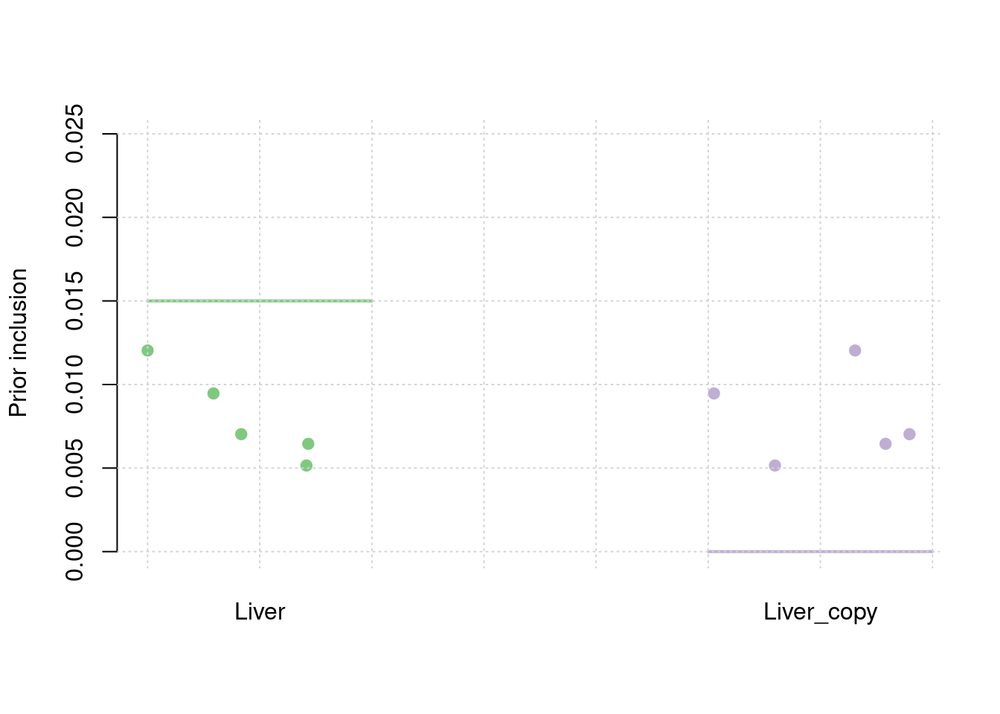
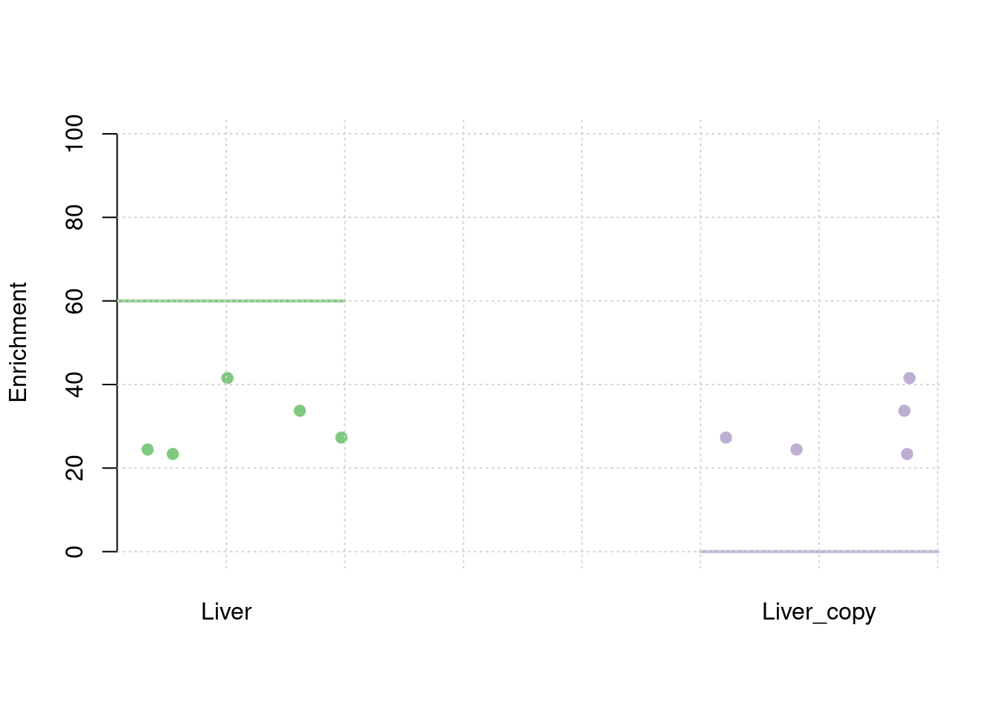
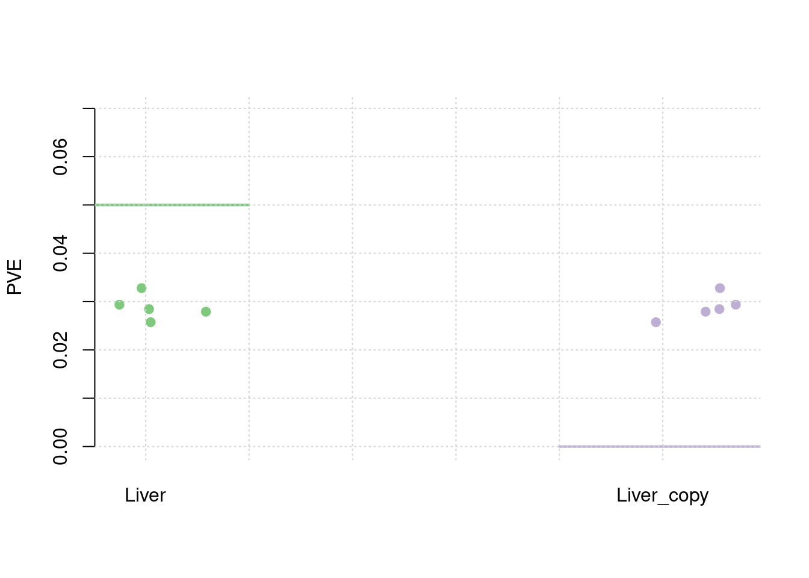
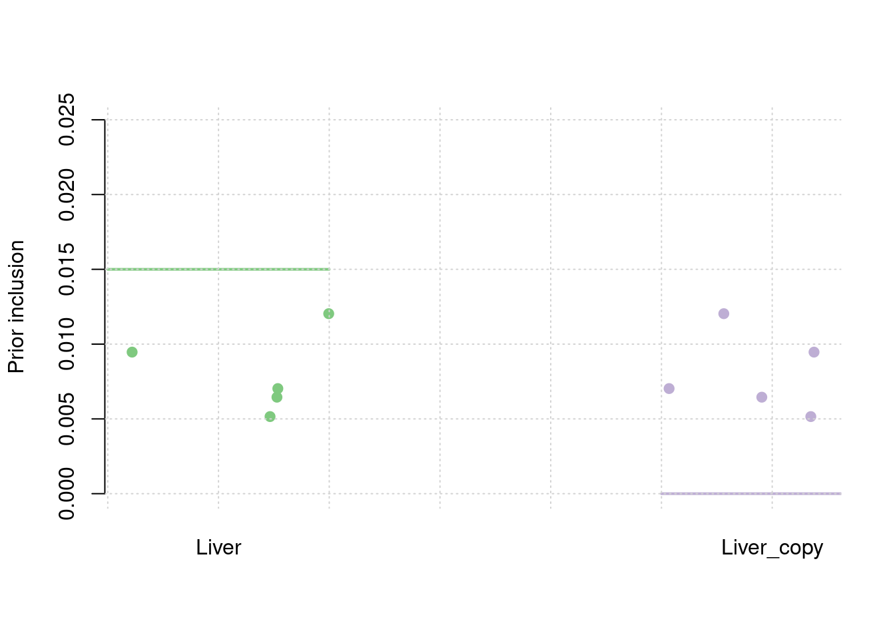
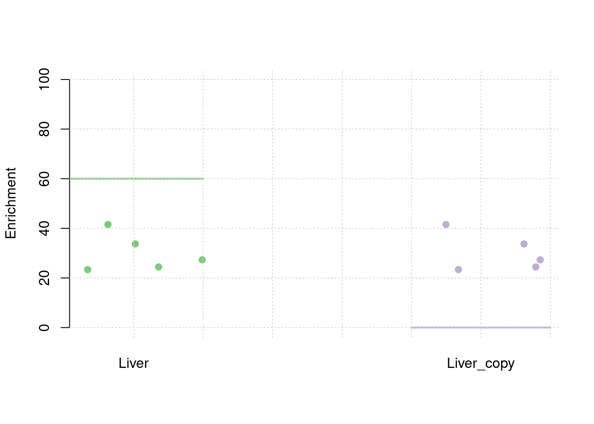
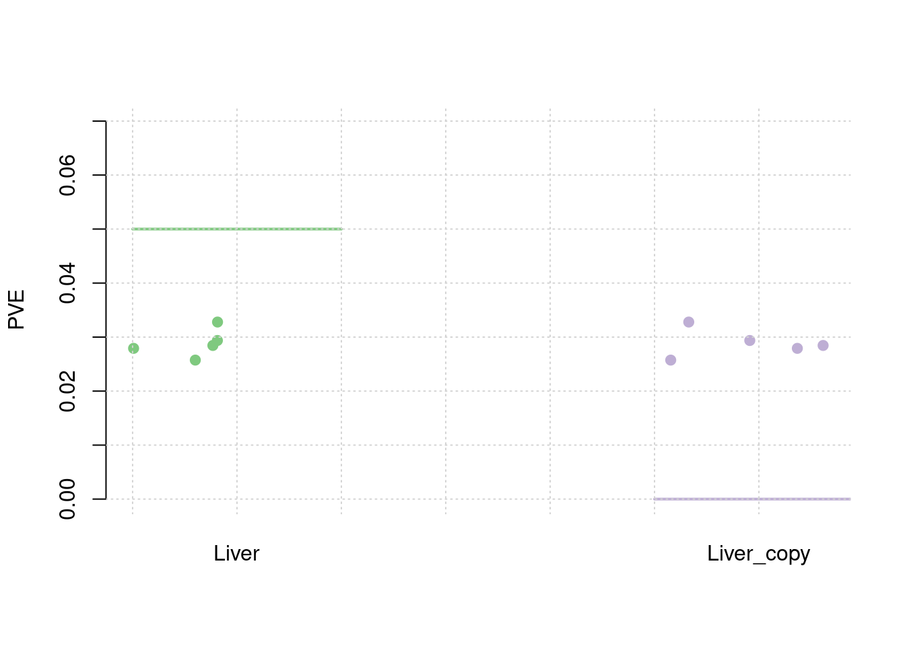
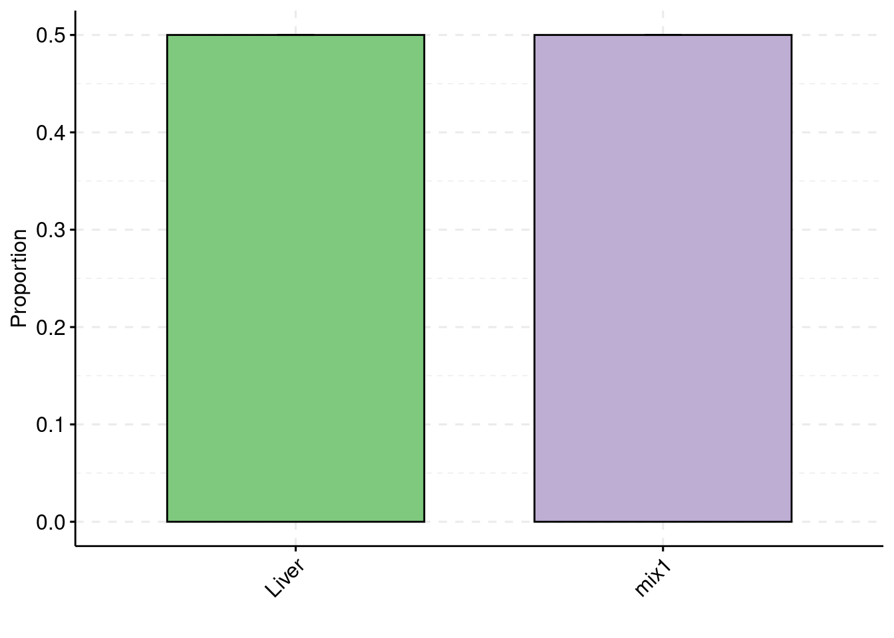

Simulation Results using simulated (correlated)
shengqian
2023-12-3
Last updated: 2023-12-05
Checks: 6 1
Knit directory: multigroup_ctwas_analysis/
This reproducible R Markdown analysis was created with workflowr (version 1.7.0). The Checks tab describes the reproducibility checks that were applied when the results were created. The Past versions tab lists the development history.
The R Markdown is untracked by Git. To know which version of the R Markdown file created these results, you’ll want to first commit it to the Git repo. If you’re still working on the analysis, you can ignore this warning. When you’re finished, you can run wflow_publish to commit the R Markdown file and build the HTML.
Great job! The global environment was empty. Objects defined in the global environment can affect the analysis in your R Markdown file in unknown ways. For reproduciblity it’s best to always run the code in an empty environment.
The command set.seed(20231112) was run prior to running the code in the R Markdown file. Setting a seed ensures that any results that rely on randomness, e.g. subsampling or permutations, are reproducible.
Great job! Recording the operating system, R version, and package versions is critical for reproducibility.
Nice! There were no cached chunks for this analysis, so you can be confident that you successfully produced the results during this run.
Great job! Using relative paths to the files within your workflowr project makes it easier to run your code on other machines.
Great! You are using Git for version control. Tracking code development and connecting the code version to the results is critical for reproducibility.
The results in this page were generated with repository version d2ccdfd. See the Past versions tab to see a history of the changes made to the R Markdown and HTML files.
Note that you need to be careful to ensure that all relevant files for the analysis have been committed to Git prior to generating the results (you can use wflow_publish or wflow_git_commit). workflowr only checks the R Markdown file, but you know if there are other scripts or data files that it depends on. Below is the status of the Git repository when the results were generated:
Untracked files:
Untracked: analysis/simulation_2tissues_same.Rmd
Unstaged changes:
Modified: analysis/index.Rmd
Note that any generated files, e.g. HTML, png, CSS, etc., are not included in this status report because it is ok for generated content to have uncommitted changes.
There are no past versions. Publish this analysis with wflow_publish() to start tracking its development.
source("/project2/xinhe/shengqian/cTWAS/cTWAS_analysis/analysis/simulation_help_functions.R")Simulation 1: Liver and three 95% correlated tissues
Shared effect size parameters
30% PVE and 2.5e-4 prior inclusion for SNPs, 5% PVE and 0.015 prior inclusion for Liver, 1% PVE and 0.003 prior inclusion for other three mixed groups.
results_dir <- "/project/xinhe/shengqian/cTWAS_simulation/simulation_same_two_tissues/"
runtag = "ukb-s80.45-3_corr"
configtag <- 1
simutags <- paste(1, 1:5, sep = "-")
thin <- 0.1
sample_size <- 45000
PIP_threshold <- 0.8#results using PIP threshold (gene+tissue)
results_df[,c("simutag", "n_causal", "n_detected_pip", "n_detected_pip_in_causal")] simutag n_causal n_detected_pip n_detected_pip_in_causal
1 1-1 118 0 0
2 1-2 95 0 0
3 1-3 116 0 0
4 1-4 117 0 0
5 1-5 113 0 0#mean percent causal using PIP > 0.8
sum(results_df$n_detected_pip_in_causal)/sum(results_df$n_detected_pip)[1] NaN#results using combined PIP threshold
results_df[,c("simutag", "n_causal_combined", "n_detected_comb_pip", "n_detected_comb_pip_in_causal")] simutag n_causal_combined n_detected_comb_pip n_detected_comb_pip_in_causal
1 1-1 118 31 28
2 1-2 95 32 28
3 1-3 116 26 26
4 1-4 117 41 36
5 1-5 113 40 33#mean percent causal using combined PIP > 0.8
sum(results_df$n_detected_comb_pip_in_causal)/sum(results_df$n_detected_comb_pip)[1] 0.8882353#prior inclusion and mean prior inclusion
results_df[,c(which(colnames(results_df)=="simutag"), setdiff(grep("prior", names(results_df)), grep("prior_var", names(results_df))))] simutag prior_snp prior_weight1 prior_weight2
1 1-1 0.0002108796 0.005154730 0.005154730
2 1-2 0.0002573964 0.007027990 0.007027990
3 1-3 0.0002761674 0.006451763 0.006451763
4 1-4 0.0002896721 0.012034873 0.012034873
5 1-5 0.0002807151 0.009465010 0.009465010colMeans(results_df[,setdiff(grep("prior", names(results_df)), grep("prior_var", names(results_df)))]) prior_snp prior_weight1 prior_weight2
0.0002629661 0.0080268734 0.0080268734 #prior variance and mean prior variance
results_df[,c(which(colnames(results_df)=="simutag"), grep("prior_var", names(results_df)))] simutag prior_var_snp prior_var_weight1 prior_var_weight2
1 1-1 9.443700 32.95046 32.95046
2 1-2 8.605591 22.28596 22.28596
3 1-3 7.982523 26.83210 26.83210
4 1-4 7.486181 14.84881 14.84881
5 1-5 7.210972 21.07834 21.07834colMeans(results_df[,grep("prior_var", names(results_df))]) prior_var_snp prior_var_weight1 prior_var_weight2
8.145793 23.599134 23.599134 #PVE and mean PVE
results_df[,c(which(colnames(results_df)=="simutag"), grep("pve", names(results_df)))] simutag pve_snp pve_weight1 pve_weight2
1 1-1 0.2344277 0.02791214 0.02791214
2 1-2 0.2607447 0.02573879 0.02573879
3 1-3 0.2595045 0.02844846 0.02844846
4 1-4 0.2552697 0.02936695 0.02936695
5 1-5 0.2382823 0.03278560 0.03278560colMeans(results_df[,grep("pve", names(results_df))]) pve_snp pve_weight1 pve_weight2
0.24964577 0.02885039 0.02885039 #TWAS results
results_df[,c(which(colnames(results_df)=="simutag"), grep("twas", names(results_df)))] simutag n_detected_twas n_detected_twas_in_causal n_detected_comb_twas
1 1-1 136 34 68
2 1-2 146 34 73
3 1-3 150 37 75
4 1-4 168 44 84
5 1-5 146 38 73
n_detected_comb_twas_in_causal
1 34
2 34
3 37
4 44
5 38sum(results_df$n_detected_comb_twas_in_causal)/sum(results_df$n_detected_comb_twas)[1] 0.5013405



Separate effect size parameters
For the cTWAS analysis, each tissue had its own prior inclusion parameter end effect size parameter.
results_dir <- "/project/xinhe/shengqian/cTWAS_simulation/simulation_same_two_tissues/"
runtag = "ukb-s80.45-3_corr"
configtag <- 2
simutags <- paste(1, 1:5, sep = "-")
thin <- 0.1
sample_size <- 45000
PIP_threshold <- 0.8results_df <- data.frame(simutag=as.character(),
n_causal=as.integer(),
n_causal_combined=as.integer(),
n_detected_pip=as.integer(),
n_detected_pip_in_causal=as.integer(),
n_detected_comb_pip=as.integer(),
n_detected_comb_pip_in_causal=as.integer(),
pve_snp=as.numeric(),
pve_weight1=as.numeric(),
pve_weight2=as.numeric(),
prior_weight1=as.numeric(),
prior_weight2=as.numeric(),
prior_var_snp=as.numeric(),
prior_var_weight1=as.numeric(),
prior_var_weight2=as.numeric(),
n_detected_twas=as.integer(),
n_detected_twas_in_causal=as.integer(),
n_detected_comb_twas=as.integer(),
n_detected_comb_twas_in_causal=as.integer())
for (i in 1:length(simutags)){
simutag <- simutags[i]
#load genes with true simulated effect
load(paste0(results_dir, runtag, "_simu", simutag, "-pheno.Rd"))
true_genes <- unlist(sapply(1:22, function(x){phenores$batch[[x]]$id.cgene}))
true_genes_combined <- unique(sapply(true_genes, function(x){unlist(strsplit(x, "[|]"))[1]}))
#load cTWAS results
ctwas_res <- data.table::fread(paste0(results_dir, runtag, "_simu", simutag, "_config", configtag, "_LDR.susieIrss.txt"))
ctwas_gene_res <- ctwas_res[ctwas_res$type!="SNP",]
#number of causal genes
n_causal <- length(true_genes)
n_causal_combined <- length(true_genes_combined)
#number of gene+tissue combinations with cTWAS PIP > threshold
n_ctwas_genes <- sum(ctwas_gene_res$susie_pip > PIP_threshold)
#number of cTWAS genes that are causal
n_causal_detected <- sum(ctwas_gene_res$id[ctwas_gene_res$susie_pip > PIP_threshold] %in% true_genes)
#collapse gene+tissues to genes and compute combined PIP
ctwas_gene_res$gene <- sapply(ctwas_gene_res$id, function(x){unlist(strsplit(x,"[|]"))[1]})
ctwas_gene_res_combined <- aggregate(ctwas_gene_res$susie_pip, by=list(ctwas_gene_res$gene), FUN=sum)
colnames(ctwas_gene_res_combined) <- c("gene", "pip_combined")
#number of genes with combined PIP > threshold
n_ctwas_genes_combined <- sum(ctwas_gene_res_combined$pip_combined > PIP_threshold)
#number of cTWAS genes using combined PIP that are causal
n_causal_detected_combined <- sum(ctwas_gene_res_combined$gene[ctwas_gene_res_combined$pip_combined > PIP_threshold] %in% true_genes_combined)
#collect number of SNPs analyzed by cTWAS
ctwas_res_s1 <- data.table::fread(paste0(results_dir, runtag, "_simu", simutag, "_config", configtag, "_LDR.s1.susieIrss.txt"))
n_snps <- sum(ctwas_res_s1$type=="SNP")/thin
rm(ctwas_res_s1)
#load estimated parameters
load(paste0(results_dir, runtag, "_simu", simutag, "_config", configtag, "_LDR.s2.susieIrssres.Rd"))
#estimated group prior (all iterations)
estimated_group_prior_all <- group_prior_rec
estimated_group_prior_all["SNP",] <- estimated_group_prior_all["SNP",]*thin #adjust parameter to account for thin argument
#estimated group prior variance (all iterations)
estimated_group_prior_var_all <- group_prior_var_rec
#set group size
group_size <- c(table(ctwas_gene_res$type), structure(n_snps, names="SNP"))
group_size <- group_size[rownames(estimated_group_prior_all)]
#estimated group PVE (all iterations)
estimated_group_pve_all <- estimated_group_prior_var_all*estimated_group_prior_all*group_size/sample_size #check PVE calculation
#multitissue TWAS analysis with bonferroni adjusted threshold for z scores
load(paste0(results_dir, runtag, "_simu", simutag, "_config", configtag,"_LDR_z_gene.Rd"))
alpha <- 0.05
sig_thresh <- qnorm(1-(alpha/nrow(z_gene)/2), lower=T)
twas_genes <- z_gene$id[abs(z_gene$z)>sig_thresh]
twas_genes_combined <- unique(sapply(twas_genes, function(x){unlist(strsplit(x, "[|]"))[1]}))
n_twas_genes <- length(twas_genes)
n_twas_genes_combined <- length(twas_genes_combined)
n_twas_genes_in_causal <- sum(twas_genes %in% true_genes)
n_twas_genes_in_causal_combined <- sum(twas_genes_combined %in% true_genes_combined)
results_current <- data.frame(simutag=as.character(simutag),
n_causal=as.integer(n_causal),
n_causal_combined=as.integer(n_causal_combined),
n_detected_pip=as.integer(n_ctwas_genes),
n_detected_pip_in_causal=as.integer(n_causal_detected),
n_detected_comb_pip=as.integer(n_ctwas_genes_combined),
n_detected_comb_pip_in_causal=as.integer(n_causal_detected_combined),
pve_snp=as.numeric(rev(estimated_group_pve_all["SNP",])[1]),
pve_weight1=as.numeric(rev(estimated_group_pve_all["Liver",])[1]),
pve_weight2=as.numeric(rev(estimated_group_pve_all["Liver_copy",])[1]),
prior_snp=as.numeric(rev(estimated_group_prior_all["SNP",])[1]),
prior_weight1=as.numeric(rev(estimated_group_prior_all["Liver",])[1]),
prior_weight2=as.numeric(rev(estimated_group_prior_all["Liver_copy",])[1]),
prior_var_snp=as.numeric(rev(estimated_group_prior_var_all["SNP",])[1]),
prior_var_weight1=as.numeric(rev(estimated_group_prior_var_all["Liver",])[1]),
prior_var_weight2=as.numeric(rev(estimated_group_prior_var_all["Liver_copy",])[1]),
n_detected_twas=as.integer(n_twas_genes),
n_detected_twas_in_causal=as.integer(n_twas_genes_in_causal),
n_detected_comb_twas=as.integer(n_twas_genes_combined),
n_detected_comb_twas_in_causal=as.integer(n_twas_genes_in_causal_combined))
results_df <- rbind(results_df, results_current)
}#results using PIP threshold (gene+tissue)
results_df[,c("simutag", "n_causal", "n_detected_pip", "n_detected_pip_in_causal")] simutag n_causal n_detected_pip n_detected_pip_in_causal
1 1-1 118 0 0
2 1-2 95 0 0
3 1-3 116 0 0
4 1-4 117 0 0
5 1-5 113 0 0#mean percent causal using PIP > 0.8
sum(results_df$n_detected_pip_in_causal)/sum(results_df$n_detected_pip)[1] NaN#results using combined PIP threshold
results_df[,c("simutag", "n_causal_combined", "n_detected_comb_pip", "n_detected_comb_pip_in_causal")] simutag n_causal_combined n_detected_comb_pip n_detected_comb_pip_in_causal
1 1-1 118 31 28
2 1-2 95 32 28
3 1-3 116 26 26
4 1-4 117 41 36
5 1-5 113 40 33#mean percent causal using combined PIP > 0.8
sum(results_df$n_detected_comb_pip_in_causal)/sum(results_df$n_detected_comb_pip)[1] 0.8882353#prior inclusion and mean prior inclusion
results_df[,c(which(colnames(results_df)=="simutag"), setdiff(grep("prior", names(results_df)), grep("prior_var", names(results_df))))] simutag prior_snp prior_weight1 prior_weight2
1 1-1 0.0002108796 0.005154730 0.005154730
2 1-2 0.0002573964 0.007027990 0.007027990
3 1-3 0.0002761674 0.006451763 0.006451763
4 1-4 0.0002896721 0.012034873 0.012034873
5 1-5 0.0002807151 0.009465010 0.009465010colMeans(results_df[,setdiff(grep("prior", names(results_df)), grep("prior_var", names(results_df)))]) prior_snp prior_weight1 prior_weight2
0.0002629661 0.0080268734 0.0080268734 #prior variance and mean prior variance
results_df[,c(which(colnames(results_df)=="simutag"), grep("prior_var", names(results_df)))] simutag prior_var_snp prior_var_weight1 prior_var_weight2
1 1-1 9.443700 32.95046 32.95046
2 1-2 8.605591 22.28596 22.28596
3 1-3 7.982523 26.83210 26.83210
4 1-4 7.486181 14.84881 14.84881
5 1-5 7.210972 21.07834 21.07834colMeans(results_df[,grep("prior_var", names(results_df))]) prior_var_snp prior_var_weight1 prior_var_weight2
8.145793 23.599134 23.599134 #PVE and mean PVE
results_df[,c(which(colnames(results_df)=="simutag"), grep("pve", names(results_df)))] simutag pve_snp pve_weight1 pve_weight2
1 1-1 0.2344277 0.02791214 0.02791214
2 1-2 0.2607447 0.02573879 0.02573879
3 1-3 0.2595045 0.02844846 0.02844846
4 1-4 0.2552697 0.02936695 0.02936695
5 1-5 0.2382823 0.03278560 0.03278560colMeans(results_df[,grep("pve", names(results_df))]) pve_snp pve_weight1 pve_weight2
0.24964577 0.02885039 0.02885039 #TWAS results
results_df[,c(which(colnames(results_df)=="simutag"), grep("twas", names(results_df)))] simutag n_detected_twas n_detected_twas_in_causal n_detected_comb_twas
1 1-1 136 34 68
2 1-2 146 34 73
3 1-3 150 37 75
4 1-4 168 44 84
5 1-5 146 38 73
n_detected_comb_twas_in_causal
1 34
2 34
3 37
4 44
5 38sum(results_df$n_detected_comb_twas_in_causal)/sum(results_df$n_detected_comb_twas)[1] 0.5013405



sessionInfo()R version 4.1.0 (2021-05-18)
Platform: x86_64-pc-linux-gnu (64-bit)
Running under: CentOS Linux 7 (Core)
Matrix products: default
BLAS/LAPACK: /software/openblas-0.3.13-el7-x86_64/lib/libopenblas_haswellp-r0.3.13.so
locale:
[1] LC_CTYPE=en_US.UTF-8 LC_NUMERIC=C
[3] LC_TIME=en_US.UTF-8 LC_COLLATE=en_US.UTF-8
[5] LC_MONETARY=en_US.UTF-8 LC_MESSAGES=en_US.UTF-8
[7] LC_PAPER=en_US.UTF-8 LC_NAME=C
[9] LC_ADDRESS=C LC_TELEPHONE=C
[11] LC_MEASUREMENT=en_US.UTF-8 LC_IDENTIFICATION=C
attached base packages:
[1] stats graphics grDevices utils datasets methods base
other attached packages:
[1] ggpubr_0.6.0 ggplot2_3.4.0 workflowr_1.7.0
loaded via a namespace (and not attached):
[1] tidyselect_1.2.0 xfun_0.35 bslib_0.4.1 purrr_1.0.2
[5] carData_3.0-4 colorspace_2.0-3 vctrs_0.6.3 generics_0.1.3
[9] htmltools_0.5.4 yaml_2.3.6 utf8_1.2.2 rlang_1.1.1
[13] jquerylib_0.1.4 later_1.3.0 pillar_1.8.1 glue_1.6.2
[17] withr_2.5.0 DBI_1.1.3 lifecycle_1.0.3 stringr_1.5.0
[21] munsell_0.5.0 ggsignif_0.6.4 gtable_0.3.1 evaluate_0.19
[25] labeling_0.4.2 knitr_1.41 callr_3.7.3 fastmap_1.1.0
[29] httpuv_1.6.7 ps_1.7.2 fansi_1.0.3 highr_0.9
[33] broom_1.0.2 Rcpp_1.0.9 backports_1.2.1 promises_1.2.0.1
[37] scales_1.2.1 cachem_1.0.6 jsonlite_1.8.4 abind_1.4-5
[41] farver_2.1.0 fs_1.5.2 digest_0.6.31 stringi_1.7.8
[45] rstatix_0.7.2 processx_3.8.0 dplyr_1.0.10 getPass_0.2-2
[49] rprojroot_2.0.3 grid_4.1.0 cli_3.6.1 tools_4.1.0
[53] magrittr_2.0.3 sass_0.4.4 tibble_3.1.8 car_3.1-1
[57] tidyr_1.3.0 whisker_0.4.1 pkgconfig_2.0.3 data.table_1.14.6
[61] assertthat_0.2.1 rmarkdown_2.19 httr_1.4.4 rstudioapi_0.14
[65] R6_2.5.1 git2r_0.30.1 compiler_4.1.0